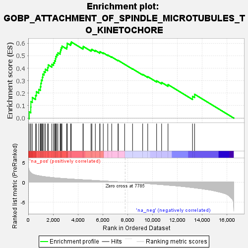
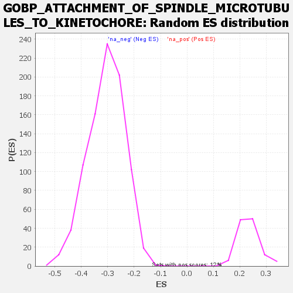

| | | Dataset | all_genes |
| Phenotype | NoPhenotypeAvailable |
| Upregulated in class | na_pos |
| GeneSet | GOBP_ATTACHMENT_OF_SPINDLE_MICROTUBULES_TO_KINETOCHORE |
| Enrichment Score (ES) | 0.61019987 |
| Normalized Enrichment Score (NES) | 2.6366928 |
| Nominal p-value | 0.0 |
| FDR q-value | 9.4140624E-4 |
| FWER p-Value | 0.001 |
Table: GSEA Results Summary

Fig 1: Enrichment plot: GOBP_ATTACHMENT_OF_SPINDLE_MICROTUBULES_TO_KINETOCHORE
Profile of the Running ES Score & Positions of GeneSet Members on the Rank Ordered List
| SYMBOL | RANK IN GENE LIST | RANK METRIC SCORE | RUNNING ES | CORE ENRICHMENT | | 1 | KAT2B | 76 | 2.941 | 0.0505 | Yes |
| 2 | CENPE | 202 | 2.421 | 0.0883 | Yes |
| 3 | CDC42 | 211 | 2.387 | 0.1325 | Yes |
| 4 | NDC80 | 326 | 2.090 | 0.1647 | Yes |
| 5 | HNRNPU | 588 | 1.795 | 0.1825 | Yes |
| 6 | NEK2 | 652 | 1.750 | 0.2115 | Yes |
| 7 | ECT2 | 845 | 1.632 | 0.2304 | Yes |
| 8 | KIF2C | 974 | 1.562 | 0.2519 | Yes |
| 9 | SKA2 | 1008 | 1.540 | 0.2788 | Yes |
| 10 | CCNB1 | 1053 | 1.509 | 0.3044 | Yes |
| 11 | CHAMP1 | 1131 | 1.469 | 0.3273 | Yes |
| 12 | NUF2 | 1171 | 1.456 | 0.3522 | Yes |
| 13 | SIRT2 | 1274 | 1.415 | 0.3725 | Yes |
| 14 | RACGAP1 | 1378 | 1.368 | 0.3919 | Yes |
| 15 | RB1 | 1558 | 1.303 | 0.4054 | Yes |
| 16 | SKA1 | 1606 | 1.286 | 0.4267 | Yes |
| 17 | SPC25 | 1898 | 1.184 | 0.4312 | Yes |
| 18 | RMDN1 | 2035 | 1.138 | 0.4443 | Yes |
| 19 | PMF1 | 2118 | 1.108 | 0.4601 | Yes |
| 20 | SPAG5 | 2185 | 1.089 | 0.4765 | Yes |
| 21 | SGO1 | 2219 | 1.079 | 0.4947 | Yes |
| 22 | ZWILCH | 2292 | 1.057 | 0.5101 | Yes |
| 23 | SPC24 | 2384 | 1.034 | 0.5240 | Yes |
| 24 | KNSTRN | 2564 | 0.993 | 0.5317 | Yes |
| 25 | BIRC5 | 2600 | 0.983 | 0.5480 | Yes |
| 26 | SKA3 | 2647 | 0.969 | 0.5634 | Yes |
| 27 | ZNF207 | 2712 | 0.954 | 0.5774 | Yes |
| 28 | APC | 3099 | 0.868 | 0.5702 | Yes |
| 29 | CDCA8 | 3127 | 0.861 | 0.5847 | Yes |
| 30 | BECN1 | 3130 | 0.860 | 0.6007 | Yes |
| 31 | KAT5 | 3405 | 0.802 | 0.5991 | Yes |
| 32 | RCC2 | 3466 | 0.789 | 0.6102 | Yes |
| 33 | MAPRE1 | 4400 | 0.607 | 0.5650 | No |
| 34 | AURKB | 4424 | 0.603 | 0.5749 | No |
| 35 | MIS12 | 5051 | 0.494 | 0.5461 | No |
| 36 | CDK1 | 5118 | 0.484 | 0.5512 | No |
| 37 | KNL1 | 5397 | 0.427 | 0.5423 | No |
| 38 | ZW10 | 5750 | 0.363 | 0.5278 | No |
| 39 | EML4 | 5774 | 0.359 | 0.5331 | No |
| 40 | CENPC | 6033 | 0.313 | 0.5233 | No |
| 41 | BOD1 | 6397 | 0.245 | 0.5059 | No |
| 42 | NSL1 | 6713 | 0.193 | 0.4904 | No |
| 43 | SEH1L | 7222 | 0.106 | 0.4615 | No |
| 44 | ABRAXAS1 | 7240 | 0.103 | 0.4625 | No |
| 45 | INCENP | 7753 | 0.007 | 0.4315 | No |
| 46 | DSN1 | 8391 | -0.112 | 0.3950 | No |
| 47 | ABRAXAS2 | 9205 | -0.269 | 0.3507 | No |
| 48 | BUB3 | 9611 | -0.352 | 0.3327 | No |
| 49 | AURKC | 10325 | -0.516 | 0.2991 | No |
| 50 | KNTC1 | 10727 | -0.612 | 0.2862 | No |
| 51 | TEX14 | 11244 | -0.744 | 0.2688 | No |
| 52 | MAD1L1 | 13216 | -1.359 | 0.1747 | No |
| 53 | CDT1 | 13384 | -1.414 | 0.1911 | No |
Table: GSEA details [plain text format]

Fig 2: GOBP_ATTACHMENT_OF_SPINDLE_MICROTUBULES_TO_KINETOCHORE: Random ES distribution
Gene set null distribution of ES for GOBP_ATTACHMENT_OF_SPINDLE_MICROTUBULES_TO_KINETOCHORE